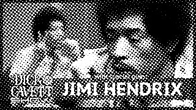
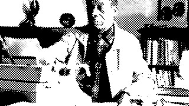

Videostars
Video essays and lectures that struck a chord with me. Or whatever jetsam the youtube reccomended page sends my way.
-

Harold Bloom interview on Harry Potter, the Internet and more (2000)
If there’s one thing Charlie Rose will do it’s get his point across and I say this derogatorily. Yeah he’s charismatic and asks engaging questions but the way he goes about it … it’s ironic for the line of work he’s in that he has such meandering and unclear wording. It feels like he’s prioritizing sounding intellectual over planning out his line of questioning. He does that thing where he starts asking a question and his guest will get the gist and start answering but he just had to finish what he’s saying first. Surprisingly unaccommodating.
Anyways I love Harold Bloom. I love his snobbery (in that we are kin) and that he has the intellect to back it up. Do I agree with everything he says, obviously not but I admire his balls. He says the shit he wants to say. Though it was easier back then, I don’t wanna know how the pc crowd would react if he was alive today. I think he’d keel over and die (again) if he saw the state of personal taste and media literacy we have today. I’ll need to lookup on if he had any thoughts on how consumerism has affected our perception of quality. I sure have a lot. RIP Mr. Bloom. -

Jimi Hendrix Talks Nervous Breakdowns and Performing At Woodstock | The Dick Cavett Show
I've been watching a lot of old talk shows especially Dick Cavett and Johnny Carson. Not so much Carson because idk most of his guests ://. Favorite guests: Orson Welles, Hitchcock, and Groucho Marx. I truly despise modern talk show hosts now that I know what we used to have.
Awhile ago I really enjoyed Charlie Rose interviews but my opinion of him has since soured. Something I really loved was watching his sessions with Susan Sontag and Joan Didion back to back. Sontag being very assertive and almost regal whereas Didion was like a stuttering bird I wanted to hold in my palm. God brilliant, brilliant women. -

James Baldwin - The Artist's Struggle for Integrity (Full Recording)
Wow Baldwin has such an engaging cadence to his voice. I don't necessarily identify as an "artist" but by Baldwin's definition I am a sufferer. What he's saying here is that artists bridge the gap, the untranslatable, of what the whole of humanity feels. Whether they do it well or not doesn't matter but what does is if someone else was on the other side to connect. This does make me wonder what role reclusive artists play in this exchange. I think about James Hampton a lot. Before his work was discovered, was its only value whatever joy and fulfillment it brought Hampton? And what about the betrayal of blasting out something so clearly private to him?